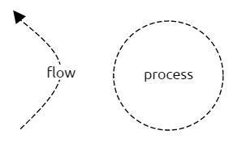
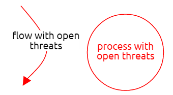

Threat Dragon is an open-source threat modelling tool from OWASP. It comes as a web application or an Electron
based installable desktop app for MacOS, Windows and Linux. The desktop app saves your threat models on your local file system,
but the online version stores its files in GitHub. This means that to use web app you have to sign in with a GitHub account and
give it write access to your public repos. Other than that, the user experience is currently almost identical between the web and
desktop variants. In the future, there will be deeper integration with GitHub (and other code repositories).
Threat Dragon is currently in development as an OWASP incubator project, so there might still be some bugs.
Downloading the installable desktop application.
Getting started with Threat Dragon for the first time.
How to work with diagrams for your threat model .
A description of the rules used for threat generation.
Downloading the desktop app
The following installable versions are available for download from GitHub:
Windows (64 bit)
MacOS
Linux
The current versions of the desktop application are not code-signed. This means you could get a warning when you try to install it on Windows. It also
means that the application will not auto-update on any of the platforms. This will be fixed in a future release.
Getting started
Creating a new model
Web application
The Threat Dragon web variant stores its threat models in your GitHub repos. This is so that the models can stay close to the
code they are modelling. Future versions will provide a deeper integration so watch this space but for now, when you login to Threat Dragon for the first time and
hit https://threatdragon.org you will see the Welcome page. To get started with your threat model click or tap
You will then be presented with a list of your GitHub repositories. Pick the one where you want to store your new
model. If you have more than 30 repos you might have to page through them until you find the one you want. Once you
have picked your target repo, you will be asked to pick a branch. Again, if you have more than 30 branches you might need
to page. When you pick a branch you will be taken to the threat model edit page where you can enter general information about your model.
Desktop application
The Threat Dragon desktop variant stores its threat models on your local filesystem. To get started with your threat model click or tap
You will then be taken straight to the threat model edit page where you you can enter general information about your model.
Threat model edit page
The Title field is mandatory. All the rest are optional, but they provide
context for your model. This can be useful if someone else has to pick the model up in the future.
Although only the Title field is mandatory, your model will a be pretty useless without Diagrams.
Add some diagrams to your model by clicking or tapping
Name your diagram and then click or tap Add to confirm or Cancel if you change your mind
At this stage you are just listing the diagrams and naming them. You add all the diagram elements later.
Once you have entered all the details you need, click or tap Save. You can also Cancel to exit without saving, or Reload to undo any changes and revert to your last save.
In the web variant oif Threat Dragon, models are saved in your chosen branch at a path like ThreatDragonModels/[model name]/[model title].json. Look at the
Demo Threat Model for an example. Because of this, if you change
title of your model it will delete the old model in GitHub and replace it with one at the new path. This does not apply to the desktop variant.
Congratulations! You have got the basics done. Next step...mapping out your system in a diagram.
Loading a demo model
If you are wondering how to start, you can load a sample threat model. On the welcome page, to download the sample, click or tap
This should give you some ideas on how to get started with your own model. This works for both the web and desktop variants.
Opening an existing model
Web application
If you have a repository that already has threat models, you can open them by clicking or tapping
You will then be able to select a repo and branch and finally you will be able to choose from a list of models.
Desktop application
If you have an existing model file saved locally, you can open it by clicking or tapping
You will then be able to find the model file in your local file system and open it.
This should give you some ideas on how to get started with your own model. This works for both the web and desktop variants.
Threat model report
From the Threat Model details view you can see a summary report of your model listing the diagrams, elements and threats.
Towards the bottom right of the page click
On the desktop variant of Threat Dragon you can print the report or save it as a PDF.
On the web variant, you can print the report and then, on most browsers, the print dialog allows you to save the report as a PDF.
Threat model diagrams
Diagram title
To edit the diagram title, click or tap the icon
towards the top right of the diagram editor. When you have edited it, tap or click
to save your change, or
to cancel and discard your change.
Processes, data stores and actors
Add model elements to your diagram by clicking or tapping the relevant shape in the stencil on the left side of the
diagram editor. Once added they can be selected by clicking them to see their properties and threats and
dragged around the diagram. to delete an element, first select it and then click on the red icon it the elements top left
corner...
Data flows and trust boundaries
Data flows and trust boundaries can be added to the diagram by clicking their shape in the stencil on the left side of
the diagram editor. Once added, their ends can be dragged around the diagram. To connect the end of a data flow to a process,
data store or actor, you can drag one of its ends onto the element.
An easier way to draw data flows between elements is to select your first element, then click the grey link tool, next to the red
remove tool near the top right of the selected element. This turns the link tool green. Then, when you click another element,
a new data flow will be created, linking the first element to the second.
Extra vertices can be added by clicking at some
point on the line. These new vertices can also be dragged to position the data flow or trust boundary. Vertices can be removed
by clicking the remove tool that appears when you mouse near to the vertex.
A data flow can be selected by clicking the Link options tool that appears when you mouse near to the link.
Once selected you can edit its properties or add threats to it. Trust boundaries cannot be selected.
Data flows and trust boundaries can be deleted by clicking the red remove tool that appear when you mouse near to them.
Out of scope elements
Processes, data stores, actors and data flows can be marked as out of scope. You can use this for elements that are needed
to help a diagram make sense, but for which you are not interested in creating threats. To help reviewers (and as a reminder
for future-you) you can specify a reason why elements have been marked out of scope. Threat generation is disabled for these
elements. Out of scope elements are indicated in diagrams with dashed lines:

Elements with open threats
Processes, data stores, actors and data flows that have open (unmitigated) threats are highlighted in red so that you know
where to focus your attention:

Editing toolbar
The toolbar on the diagram editing page supports some general diagramming features:
Toggles gridlines on/off. When gridlines are on, elements snap to them for neater models.
Cancels the edit and returns to the threat model details view.
Clears all the elements from the model.
Reloads the diagram from the last save, discarding any changes.
Generates threats for the selected element using the threat generation rule engine.
Duplicates the selected element as a new element.
Saves the threat model to your local browser storage.
Element properties
To edit the properties of a model element, first select it. The element properties are shown on the right side of
the diagram editor. In a future version of Threat Dragon, these properties will be used by the threat generation engine to
suggest threats and mitigations for your model.
Adding and editing threats
To add threats to elements in your diagram, select an element and tap or click Edit Threats on the left side
of the diagram editor.
This will collapse the model element stencil and show the threats for the selected element. To add a new threat, tap or click
Enter the details for your threat in the threat dialog. The Title and STRIDE Threat Type
are mandatory. When you are done, hit Save and your new threat should appear. To edit it again, tap or click
its title.
Threat generation rules
Threat Dragon provides STRIDE per Element
rules to generate the suggested threats for an element on the diagram - except for trust boundaries. The suggested threats
can be individually accepted or ignored, and other threats added manually.